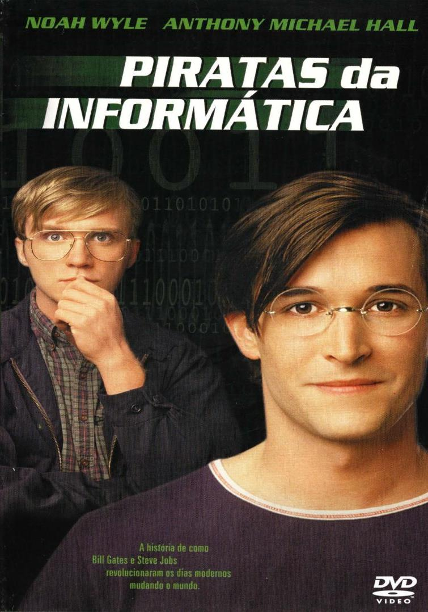

Piratas do Vale do Silício é um filme que retrata de forma envolvente e dinâmica o surgimento da indústria de computadores pessoais, focando principalmente na rivalidade entre duas figuras icônicas: Steve Jobs, da Apple, e Bill Gates, da Microsoft. A produção apresenta os bastidores da revolução tecnológica que mudou o mundo, mostrando não apenas os avanços inovadores, mas também as disputas, estratégias e controvérsias que marcaram essa trajetória
A narrativa acompanha desde os primeiros passos das empresas em garagens e universidades até o crescimento acelerado que as levou ao topo do mercado. O filme destaca o espírito visionário de Jobs, aliado ao seu temperamento intenso, em contraste com a postura estratégica e calculista de Gates. Essa dualidade cria um enredo interessante, que vai além da tecnologia e explora aspectos humanos, como ambição, genialidade e ética.
Um dos pontos fortes do filme é a forma como ele simplifica conceitos técnicos, tornando a história acessível até mesmo para quem não tem conhecimento na área de informática. Além disso, o ritmo ágil e o tom quase documental contribuem para manter o espectador engajado do início ao fim.
Por outro lado, vale ressaltar que, por se tratar de uma dramatização, alguns eventos podem ter sido adaptados ou exagerados para fins narrativos. Ainda assim, isso não compromete a mensagem principal da obra, que é mostrar como ideias ousadas e competição intensa moldaram o mundo digital em que vivemos hoje.
Em resumo, Piratas do Vale do Silício é uma excelente escolha para quem se interessa por tecnologia, história ou empreendedorismo. O filme oferece uma visão inspiradora e crítica sobre o nascimento de gigantes da indústria, além de provocar reflexões sobre inovação e o impacto das decisões humanas no progresso tecnológico.